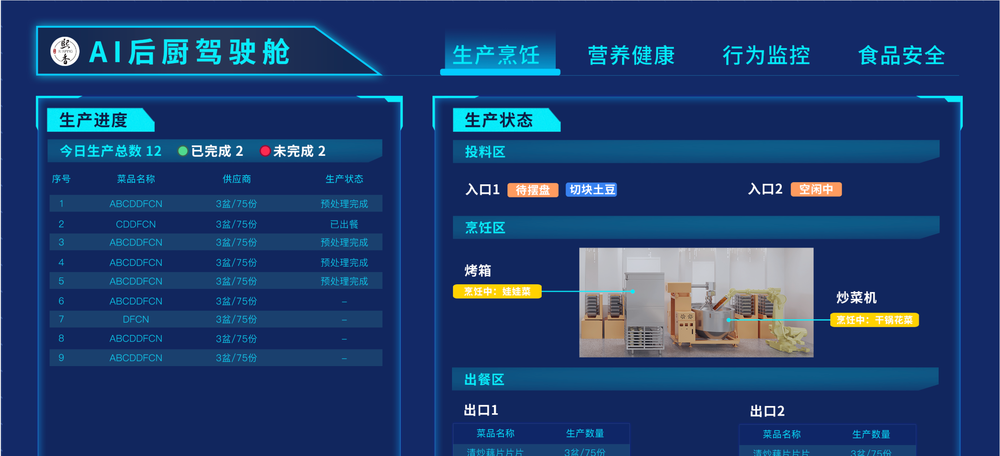

生产保障页 · 原型主规格
本稿为新增大屏页面的评审稿。页面聚焦生产风险、工序等待和出餐影响；确认后再接入原型导航与页面实现。
页面目标与边界
- 目标用户：查看后厨运行保障情况的领导和管理者。
- 核心问题：当前或下一餐段是否有生产风险；风险卡在哪个环节、影响哪些菜和出餐计划。
- 沿用已确认的大屏风格：深蓝青色、横屏 16:9、顶部页面切换；页面名暂定“生产保障”。
- 设备分配由既有算法给出最优解，本页不提供重新分配建议，也不展示独立的设备产能负荷图。
- 不增加食安内容；不虚构库存缺料、能耗或设备故障数据。未接入的数字在原型中标为演示数据。
- 过去的餐段只显示及时或延迟结果；“未完成”只允许出现在当前或即将到来的餐段。
- 关联总览页的演示产线口径：2 台炒菜机（CCJ1 为 600 型、CCJ2 为 800 型）、1 台烤箱、1 个出餐出口；上游统一为“投料区”，含 2 个入口。
页面设计稿预览
生产保障
排产节点落后工单03 单现场状态晚于倒排计划
阶段等待超时02 单超过阈值，不等于延迟出餐
称重加料待办04 单未完成称重加料的工单
预计延误量02 盆预计完成晚于批次截止
排产节点与现场进度 倒排计划 × 当前状态
计划 11:42现场状态未单列
计划 11:48现场 11:50 · 晚 2 分
无独立计划点现场进行中
计划 12:05现场 12:06 · 晚 1 分
截止 12:30现场待完成
称重加料准备度 按状态表汇总工单
待称重2
称重中1
待加料1
加料中0
称重加料完成12
以工单状态统计；不推断库存是否缺料
需关注工单 按批次截止与节点偏差排序
级别餐段 / 排产截止菜品 / 工单当前状态计划偏差出餐量
高风险午餐 · B02 / 12:30青椒肉丝 · WO-032烹饪中预计晚 4 分预计延误 2 盆
需关注午餐 · B02 / 12:30番茄炒蛋 · WO-044摆盆中无独立排产点关联计划量 1 盆
排产节点来自倒排计划，现场状态来自工单；只有预计完工晚于批次截止时才汇总预计延误量。示例数值仅用于表达层级。
模块、数据与规则
| 模块 | 呈现内容 | 统计口径 / 数据来源 | 与现有页面的分工 |
|---|---|---|---|
| 风险指标卡 | 排产节点落后工单、阶段等待超时工单、称重加料待办、预计延误量 | 工单按工单 ID 去重；预计延误量按未完成工单的计划盆数计，且仅在有可信预计完工时间时计算 | 展示计划执行偏差与真实出餐风险，不重复总出餐量和完成率 |
| 排产节点与现场进度 | 预处理、称重、烹饪、计划烹饪完成的时间点，与可对应的现场状态并排 | 同组菜品可能共用称重 / 烹饪时间区间；摆盆目前无独立排产点，出餐取餐状态单独显示 | 将算法计划和现场进度并排，避免把等待时长直接当成延迟 |
| 称重加料准备度 | 待称重、称重中、待加料、加料中、称重加料完成工单数 | 来自工单状态；不推断原料库存、缺料或齐套 | 汇总备料状态，不重复菜品原料重量明细 |
| 需关注工单 | 餐段 / 排产截止、菜品 / 工单、当前状态、计划偏差、预计延误盆数 | 主列表按工单展示；算法给多张工单分配同一计划时段时，注明“共用计划时段”；预计延误盆数按未完成工单 ID 去重汇总 | 使用业务人员熟悉的菜品和工单；不暴露算法内部组合名称或编号 |
上方：一眼判断页面标题与餐段 → 4 张风险指标卡，数字统一标明单位。
中部：对照执行左侧查看排产节点与现场状态偏差；右侧按用户状态表汇总称重加料进度。
下方：看到影响风险工单清单横跨页面，按菜品和工单展示状态、计划偏差与计划盆数。
设备展示边界算法最优分配继续作为已知前提；只有设备异常实际影响工单时，才在风险原因中呈现。
字段释义与统计口径
| 字段 | 含义 | 单位 / 计算方式 | 注意事项 |
|---|---|---|---|
| 排产截止时间 | 排产算法分配给餐段或批次的目标时刻。 | 时:分；有批次时取 batchTime；未指定批次时取餐段 sectionStart。 | 当前算法将它作为烹饪层结束的上限，sectionEnd 不参与计算。若业务所说的截止是“实际出餐/取餐”，还需把烹饪后的搬运与出餐耗时纳入倒排，不能直接把算法 finish 当成出口时间。 |
| 算法内部组合 | 排产算法为了合并计算盆数、分配设备层次和生成共享时间区间而建立的临时计算集合。 | 开启合并时按 groupId 与截止时间分组；部分烤箱 / 油炸炉任务会按首个程序与截止时间组合。 | 这是算法实现概念，不是业务工单、菜品分类或现场流程。页面不展示组名、组号或组筛选；若多张工单共用计划时段，只作共享时段提示。 |
| 排产节点时间 | 排产算法从截止时间向前倒排得到的计划时间点。 | 预处理、称重、烹饪、计划烹饪完成；使用算法生成的 checkpoints。 | 这是计划基准，不是现场实绩或实时 ETA；finish 是组内最晚烹饪结束，不等同于出口实际出餐记录。当前算法对超过 12 层的组可能低估称重时长，且完整倒排只使用首道 SOP 工序；这些边界校验前不应作为可信 ETA。 |
| 工单计划节点偏差 | 工单现场进度相对适用的倒排计划节点的提前或滞后程度。 | 分；按工单 ID 去重，比较相同节点的计划时间与现场状态变更时间。 | 同一算法内部组合中的工单可能共用计划区间；缺少现场时间戳时显示“—”；摆盆目前没有独立倒排节点，不计算摆盆计划偏差。 |
| 预计完工时间 | 结合当前现场进度估算工单能否赶上排产截止的时间。 | 估算值 = 当前时间 + 当前工序剩余耗时 + 后续工序耗时 + 下游等待。 | 所附排产算法只生成静态计划时间线，不直接输出实时预计完工；需接入状态时间、工序剩余耗时和实际设备队列后才能展示。称重 / 预处理未建模共享人员或工位资源。 |
| 风险工单 | 当前或下一餐段中，需要管理者关注的生产工单。 | 单；按工单 ID 去重。同一工单同时满足多个风险条件时只计 1 单。 | 风险条件需由等待阈值或可信的预计完成时间判定，阈值尚待业务确认。 |
| 等待超时 | 处于某一生产阶段的时间已超过该阶段配置的等待上限。 | 单；停留时长 = 当前时间 − 最近一次进入当前状态的时间。 | 它表示过程等待，不等同于已经延迟出餐。缺少状态时间戳时显示“—”，不填 0。 |
| 称重加料待办 | 尚未完成称重加料阶段的工单。 | 单；统计“待称重、称重中、待加料、加料中”；“称重加料完成”不计入待办。 | 来自工单当前状态，不推断原料库存或缺料情况。 |
| 预计延误量 | 预计完工晚于批次截止的工单所关联的计划出餐量。 | 盆；汇总预计完工时间晚于截止时间的工单计划盆数，最小计量单位为 1 盆；按工单 ID 只计一次。 | 当前排产结果本身不足以计算此值；没有可信 ETA 时显示“—”，可另列“关联计划量”，不能把它说成确定延迟。 |
| 阶段工单数 | 当前处于某个工艺阶段的工单数量。 | 单；按工单最新状态映射到一个阶段，每单只归属一个阶段。 | 同一道菜拆成多个工单时分别计数；工单作废不计入在途阶段。 |
| 最长停留 | 当前阶段所有在途工单中，进入该阶段最早的一单已停留的时间。 | 分；取阶段内最大停留时长，不取平均值。 | 它是现场等待指标，与倒排计划偏差、预计延迟分开呈现；等待久不自动代表出餐晚。 |
| 餐段 / 批次截止 | 工单所属餐段、批次和算法要求该批次完成烹饪的目标时刻。 | 餐段 + 批次 + 时:分；截止来源见“批次截止时间”。 | 没有可靠截止时间时显示“—”。过去的餐段只标及时或延迟，不显示未完成。 |
| 菜品 / 工单 | 任务对应的菜品名称和唯一生产工单编号。 | 一行一张工单；同一道菜的多个工单分行显示。 | 列表按工单而非去重菜品汇总，避免把菜品种数和生产任务数混为一谈。 |
| 当前环节 / 状态 | 工单最新现场状态及其所属阶段。 | 显示用户状态表中的具体状态，不用“节点一”等泛称。 | 状态分组见下表；排产计划节点与现场状态是两类数据，应并列展示。 |
| 停留 | 工单处于当前状态的持续时间。 | 分；当前时间 − 当前状态开始时间。 | 与“阶段最长停留”不同：列表是单工单时长，图表是同阶段最大值。 |
| 出餐影响 | 风险工单关联的未完成计划量，或系统预测会延误的出餐量。 | 盆；按未完成工单计划量汇总，一张工单只计一次，最小单位 1 盆。 | 计划节点偏差只说明现场落后于计划；只有预计完工晚于截止时才显示“预计延误”，否则仅列“关联计划量”。 |
| 风险级别 | 工单相对出餐计划的紧急程度。 | 高风险 / 需关注 / 正常。 | 判断规则依赖阶段等待阈值和预计完成时间；规则未配置前，原型样例级别仅为演示。 |
工单状态到阶段的对应关系
| 阶段 | 包含的当前状态 | 阶段说明 |
|---|---|---|
| 称重前 | 未开始 | 工单尚未开始称重。 |
| 称重加料 | 待称重、称重中、待加料、加料中、称重加料完成 | 按用户提供的状态表归组；准备度分布会再把每个具体状态分开展示。 |
| 摆盆 | 待摆盆、摆盆中、摆盆完成 | 容器进入摆盆流程，尚未开始烹饪的阶段；所附排产逻辑没有单独输出摆盆计划时间，因此目前只展示现场状态。 |
| 烹饪 | 待烹饪、预热中、烹饪中、烹饪完成 | 等待设备、预热及实际烹饪状态均归入此阶段；烹饪中对应设备内的实际烹饪状态。 |
| 出餐取餐 | 开始出餐、出餐完成、取餐中、取餐完成 | 烹饪结束后的出餐与人工取餐流程。 |
| 作废 | 已作废 | 不计入在途、待办、等待超时或计划受影响量。 |
待确认后实施
- 现场系统是否提供工单状态变更时间、当前作业剩余耗时和设备实际队列；缺少这些数据时，本页只比较计划与现场，不宣称实时预计延误。
- 需确认排产截止时间代表烹饪完成还是实际出餐；当前算法的 finish 只到组合内最晚烹饪结束。
- 各阶段等待超时阈值由业务确认；等待超时与预计赶不上批次截止分开展示。
- 是否需要为摆盆增加独立排产节点；当前算法未输出该节点，原型不从称重或烹饪时间臆算。
- 生产保障页独立于总览、出餐统计和行为监控；总览页另按已确认的设备与入口配置展示。
补充页面：驾驶舱配置后台
配置后台作为同一原型的管理端视图，通过原型目录「驾驶舱配置后台」进入，不加入驾驶舱四个业务 Tab，也不参与自动轮播。
- 页面沿用参考截图的设备管理后台结构：左侧设备管理菜单、顶部面包屑与食堂切换；驾驶舱编辑内容作为独立网页呈现，可返回配置列表。
- 基本信息包含智厨驾驶舱名称、编号、描述、屏幕版本、品牌 Logo、启用状态、统一页面轮播开关与间隔（秒）、逻辑遥控器启用状态，以及“显示页面”多选项；多选结果决定大屏导航中实际展示哪些页面。
- 页面配置位于基本信息下方，改为上下结构并以四个固定系统页签切换：生产烹饪、营养健康、出餐统计、行为监控。配置页签名称保持系统标准名称不变，不提供页面排序；各页签内可配置该页面在大屏上实际显示的名称，名称变化仅影响大屏显示，不改系统页签名称。页面标识仅作为内部固定路由，不在配置界面展示。
- 模块配置仅支持修改模块在大屏上的展示名称；不提供模块启用开关、删除/排序、页面标识、布局面板或字段/表格列勾选。
- 页面专属设置按当前页面切换：营养健康页配置餐品轮播间隔（秒），出餐统计页不提供“默认餐段”配置，生产烹饪页维护明厨亮灶视频流名称及地址；行为监控页不配置模块或其他细项，仅保留页面示意图。
- 明厨亮灶最多配置 8 路视频流；取消网格平铺，自动轮播默认开启，默认间隔 20 秒，支持关闭轮播和配置间隔。小窗单画面展示当前区域名称及路数进度，视频流地址仅作配置示例，原型不播放真实流。
- 入口、烹饪设备和出口较多时，生产流程主图保留区域总览与运行路径，并提供按类型分组的节点数量、状态示例，避免在流程图中密集平铺设备。
- 营养健康页按“餐品 + SOP 版本”生成营养轮播卡。同名餐品的不同 SOP 分别展示配方版本、原料配比和对应营养素；今日菜单按餐品合并，并标记包含多个 SOP，不与营养轮播卡联动。
- 出餐明细的实际出餐时间缺失时显示“—”；初始化示例标记为“待出餐”，且不计入上方汇总统计。
- 配置页不设置“图上编辑”按钮：示意图作为锁定的背景图层，直接点击文字层原位修改、点击图片层选择新图并覆盖；背景不变，其他页面控件不可操作，改动实时同步到配置草稿和预览。行为监控仅展示其示意图。Logo 位于基本信息，不设单独的外观与图片页，也不单独设置大屏导航预览。
- 逻辑按键映射由后台维护业务动作与浏览器键盘 code 的关系；遥控器按键由安卓系统自动转为标准键盘码（ArrowLeft、ArrowRight、Enter）。默认 Enter 控制播放/暂停，ArrowLeft 切换上一页，ArrowRight 切换下一页；原型提供按键检测及恢复默认映射，恢复后需保存草稿或发布配置。
- 配置操作提供保存草稿、发布配置和恢复最近发布版本；当前均为浏览器本地原型状态，不代表已接入后台服务。视频地址维护不代表真实视频流播放，正式使用需接入视频服务并确保采用浏览器支持的流协议或完成协议转换。

补充页面：生产工艺查看与编辑
通过原型目录「生产工艺查看」和「编辑生产工艺」进入，页面还原生产管理后台的左侧菜单、面包屑、工作区页签和生产工艺表单。
- 查看页和编辑页均默认展示营养素页签；其他页签保留用于信息结构展示，但不产生内容切换。
- 营养素页只保留一张营养素表，统一展示能量、蛋白质、脂肪、碳水化合物、膳食纤维和钠，编辑态支持手动输入，查看态只读。
- 编辑态仅提供一个“AI 生成并覆盖”按钮，生成结果回填同一张营养素表，不重复展示 AI 结果或原料列表。
- 新增「编辑生产工艺-生成超时」和「编辑生产工艺-无原料」两个状态副本，分别展示“AI 生成超时，请重试”和“当前无原料，请在当天烹饪中补充原料”。
- 示例数据仅用于表达页面结构和异常反馈，不代表真实生产系统数据。
补充页面：商户后台-食堂餐品
通过原型目录进入，按参考截图还原餐品管理后台的静态列表页；本页仅用于视觉展示，不提供筛选、搜索、切换或表格操作。
- 保留左侧后台菜单、顶部面包屑、食堂切换区和多标签工作区。
- 主体包含筛选卡片、餐品列表标题栏和餐品数据表，展示分类、口味、菜系、餐品分级、来源、启用状态与操作列。
- 页面名称固定为“商户后台-食堂餐品”，示例数据仅用于表达截图中的布局层级。
开发参考：异常状态页面
- 原型目录「开发参考 · 异常状态」下提供「驾驶舱-无数据」和「驾驶舱-加载失败」两个独立展示页，供开发查看空数据与请求失败时的页面状态。
- 这两个参考页不属于业务页面导航，不参与页面切换和自动轮播，也不触发真实数据请求。